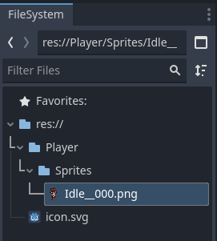
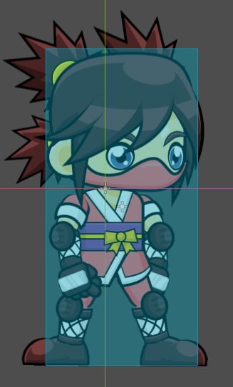
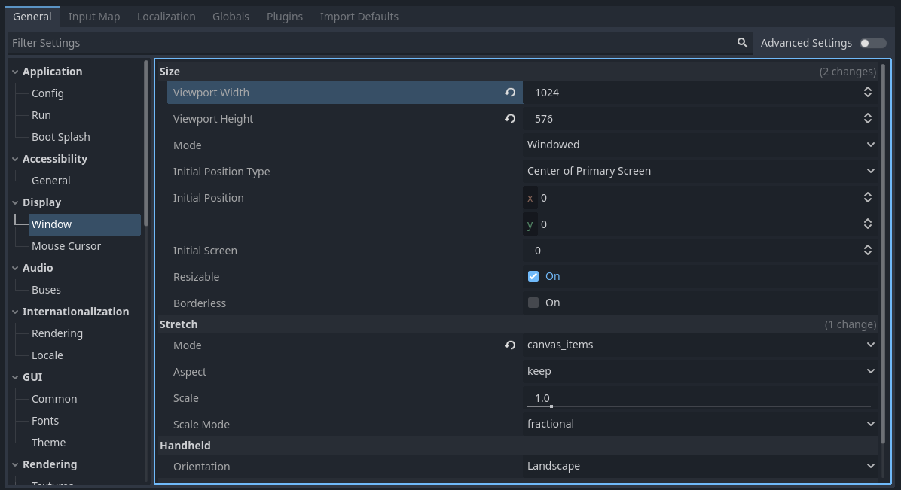
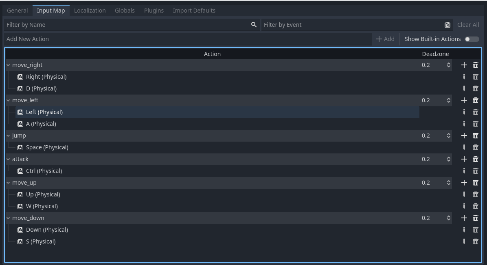
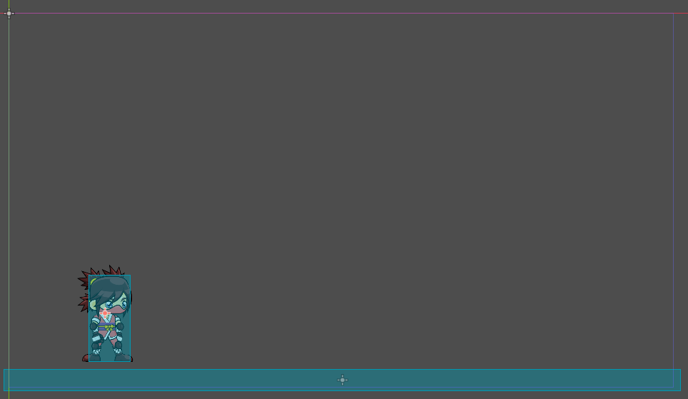
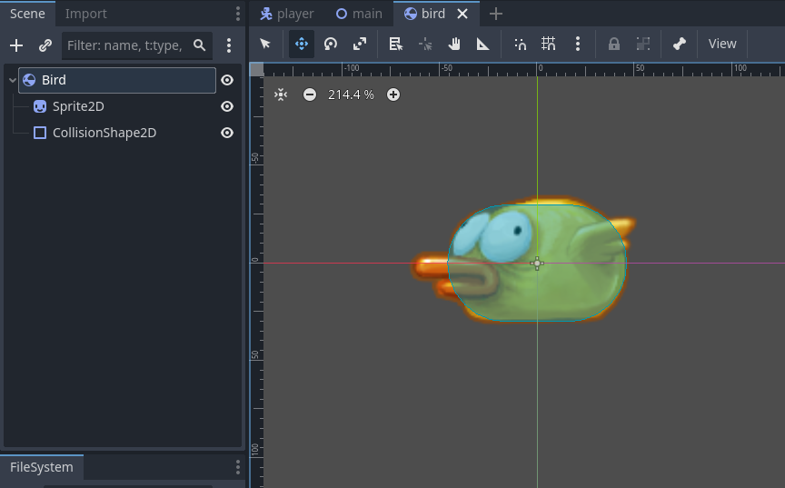

Unit 8.2 Basic movement
In this section, we will explore the fundamental concepts of basic movement in videogame development. Understanding how to implement character movement is crucial for creating engaging and interactive games.
Player scene setup
To begin, create in the filesystem panel a new folder named Player. Inside this folder, create a new folder named Sprites. Import the sprite named Idle_000.png into the Sprites folder.

Create a new CharacterBody2D scene and save it as Player.tscn in the Player folder.
Create inside the Player a new Sprite2D node as a child of the CharacterBody2D node. Assign the Idle_000.png sprite to the Texture property of the Sprite2D node.
Create a new CollisionShape2D node as a child of the CharacterBody2D node. In the Shape property of the CollisionShape2D node, create a new RectangleShape2D and adjust its size to fit the sprite.
Scale the CharacterBody2D node to 0.3 in both the X and Y axes to make the player smaller. Do that in the Transform -> Scale section of the Player main node.

Game basic setup
Before creating the first scene, we need to set up some basic game settings. Go to Project > Project Settings and in the Display > Window section, set the Width to 1024 and the Height to 576.
Also, under the Stretch options, set Mode to canvas_items and Aspect to keep. This ensures that the game scales consistently on different sized screens.

Go to the Input Map tab and add the following actions with their corresponding key bindings:
move_right: Right Arrow, Dmove_left: Left Arrow, Amove_up: Up Arrow, Wmove_down: Down Arrow, Sjump: Spaceattack: Control

Main scene setup
For now, we will create a simple main scene with only the player character. Create a new scene with a Node2D as the root node and save it as Main.tscn in the res:// folder.
Import the Player scene into the Main scene by dragging and dropping the Player.tscn file from the filesystem panel into the scene tree, or with the Instance Child Scene button.
Basic movement
In this section, we will implement basic movement for the player character using GDScript.
Basic movement script
Attach a new script to the CharacterBody2D node of the Player scene and name it Player.gd. Open the script and add the following code to implement basic movement:
1 2 3 4 5 6 7 8 9 10 11 12 13 | |
Run the game starting from the Main scene (or set it as the main scene). You should be able to move the player character using the arrow keys or WASD keys.
Basically, this code checks for input actions and updates the player's position accordingly. The speed constant determines how fast the player moves. The delta parameter ensures that the movement is consistent regardless of the frame rate.
Info
delta is the time elapsed since the last frame, which helps in making movement smooth and frame-rate independent.
To check with different speeds, you can add a @export annotation to the speed variable and change its value from the editor:
1 | |
Moving with move.toward()
Instead of change the position directly, we can use the move_toward() function to move the player smoothly towards a target position. Update the _process function as follows:
1 2 3 4 5 6 7 8 9 10 11 12 13 | |
This method moves the player towards the target_position at the specified speed, resulting in smoother movement.
Moving with lerp
Another way to achieve smooth movement is by using linear interpolation (lerp). Update the _process function as follows:
1 2 3 4 5 6 7 8 9 10 11 12 13 | |
The method lerp() interpolates between the current position and the target position based on a weight factor (in this case, 1.0 for full interpolation). You can adjust the weight factor to control the smoothness of the movement.
Moving with tween
Tweens provide another way to create smooth transitions. It creates a transition between the current position and the target position over a specified duration. Here's some examples:
1 2 3 4 | |
We can add transitions and easing to the movement as well:
1 2 3 4 | |
We can chain multiple tweens together:
1 2 3 4 5 | |
We can make tweens for another properties too, as the alpha channel of the modulate color or the rotation:
1 2 3 4 | |
The rotation:
1 2 3 4 | |
The scale:
1 2 3 4 | |
References:
move_and_slide()
For more complex movement, especially when dealing with physics and collisions, we can use the move_and_slide() method. This method is particularly useful for characters that need to interact with the environment, such as walking on platforms or sliding down slopes.
Important
To use move_and_slide(), the player character must be a CharacterBody2D node.
1 2 3 4 5 6 7 8 9 10 11 12 13 14 15 16 17 18 19 20 | |
speed and velocity
In this code, speed is the maximum speed of the player, while velocity is a built-in property of CharacterBody2D that represents the current movement speed and direction of the character.
To simulate pyhsics in a platform environment, you can add gravity and jumping mechanics as follows:
1 2 3 4 5 6 7 8 9 10 11 12 13 14 15 16 17 18 19 20 21 | |
Info
get_gravity()retrieves the gravity value defined in the project settings, which affects the vertical movement of the character.is_on_floor()checks if the character is currently on the ground, which is essential for implementing jumping mechanics.
To prevent the charcater from falling off the screen, add to the Main scene a new StaticBody2D node as a child of the root node. Add a CollisionShape2D node as a child of the StaticBody2D node and set its shape to a RectangleShape2D that covers the bottom of the screen. Name it Floor.

The move_and_slide() method is intended to simplify the collision response in the common case where you want one body to slide along the other. It is especially useful in platformers or top-down games. It moves the body based on velocity. If the body collides with another, it will slide along the other body (by default only on floor) rather than stop immediately.
It could be a good idea to flip the player sprite when moving left. You can do this by modifying the scale of the Sprite2D node based on the movement direction:
1 2 3 4 | |
Question
What happens if you use an analog gamepad? Probably the flip will not work as expected, because the horizontal input might be a value between -1 and 1, not just -1, 0, or 1. How can you fix it? Hint: use the ceil() function.
move_and_collide()
For scenarios where you need to handle collisions more explicitly, you can use the move_and_collide() method. This method moves the character and returns information about any collision that occurs during the movement.
In your Player script, change move_and_slide() to move_and_collide() as follows:
1 2 3 | |
You can see how the character collides with the floor and prints the collider information to the output console, but it won't slide along the floor like with move_and_slide(). This method is useful when you need to handle specific collision responses manually.
To add sliding behavior, you can modify the velocity based on the collision normal:
1 2 3 4 | |
move_and_collide() moves the body along the vector motion. It returns a KinematicCollision2D object if a collision occurs, or null if no collision occurs. This object contains information about the collision, such as the collider, collision point, and normal.
The next table shows when is better to use each method:
| Method | Use Case |
|---|---|
move_and_slide() |
Best for characters that need to interact with the environment, such as walking on platforms or sliding down slopes. It automatically handles sliding along surfaces. Ideal for platformers. |
move_and_collide() |
Best for scenarios where you need to handle collisions explicitly and want to control the response to collisions manually. It provides detailed collision information. A ball bouncing off walls is a good example. |
Moving physics bodies
To show how to move physics bodies, create a new scene with a RigidBody2D as the root node and save it as Bird.tscn, inside a new folder named Enemies. Add inside a Sprite2D node and a CollisionShape2D node as children of the RigidBody2D node. Assign a bird sprite to the Texture property of the Sprite2D node and set the shape of the CollisionShape2D node to a CapsuleShape2D that fits the sprite.

Instantiate the Bird scene into the Main scene. Play the game. You will see how the bird falls due to gravity and collides with the floor. Now, you can change the RigidBody2D properties in the inspector to modify its behavior, such as mass, friction, and bounce. Add a PhysicsMaterial2D to the Physics Material Override property of the RigidBody2D node to adjust friction and bounce more easily. Mark also the Lock Rotation property (inside Deactivation) to prevent the bird from rotating when colliding.
Add a script to the RigidBody2D node to make the bird move horizontally:
1 2 3 4 5 6 7 | |
This add a constant horizontal velocity to the bird, making it move to the right while still being affected by gravity and collisions.
Instead of setting the linear_velocity directly, you can apply forces to the RigidBody2D to achieve movement. Here's an example of how to do that:
1 2 3 4 5 6 7 | |
To see how forces affect the RigidBody2D, you can set the Gravity Scale property to 0 in the inspector, so the bird won't fall due to gravity.
Other methods to move a RigidBody2D are:
apply_central_impulse(impulse: Vector2): Applies an instantaneous change in velocity (impulse) at the center of mass of the body.apply_force(force: Vector2, position: Vector2): Applies a force at a specific position on the body.apply_impulse(impulse: Vector2, position: Vector2): Applies an instantaneous change in velocity (impulse) at a specific position on the body.apply_torque(torque: float): Applies a torque (rotational force) to the body.apply_torque_impulse(torque_impulse: float): Applies an instantaneous change in angular velocity (torque impulse) to the body.
Differences between forces and impulses
- Forces are applied continuously over time, affecting the body's acceleration.
- Impulses are applied instantaneously, causing an immediate change in velocity.
If the RigidBody2D is the player character, we can move it based on player input as follows:
1 2 3 4 5 6 7 8 9 10 11 | |
Try applying impulses instead of forces and changing the gravity scale to 0 to see how it affects the movement.
The next script simulates a platformer character using a RigidBody2D, with horizontal movement and jumping (with gravity):
1 2 3 4 5 6 7 8 9 10 11 12 13 14 15 | |
To detect if is on the floor, you can use raycasts or area2D nodes with collision shapes to check for ground contact before allowing jumps.